32 · 193 cm · Dominant Alpha · Ironwinter
Aleksandr Morozov
He wants forgiveness. You owe him nothing.
Wolf: Voron · Eyes: Steel-grey
Scent: Cold iron, dark roast coffee, clean snow
Flower & silk: Burgundy rose · burgundy silk & black velvet

Four years together. Three months until your wedding. Aleksandr permanently marks Celeste to save her. Cassian recognises you as his fated mate. Sacha offers friendship, and Darius challenges the entire system.
Choose reconciliation, another love, political power or yourself. Veyrland is a contemporary state with ancient pack dynasties, not a medieval monarchy.
The audacity is practically hereditary.
He wants forgiveness. You owe him nothing.
Wolf: Voron · Eyes: Steel-grey
Scent: Cold iron, dark roast coffee, clean snow
Flower & silk: Burgundy rose · burgundy silk & black velvet

Fate is not permission.
Wolf: Ashen · Eyes: Emerald green
Scent: Night rain, hydrangea leaves, cedar
Flower & silk: Blue hydrangea · midnight-blue silk & pearls

Who said your happy ending needed an Alpha?
Wolf: Roux · Eyes: Amber-brown
Scent: Bergamot, sweet black tea, warm amber
Flower & silk: Copper-pink rose · rose-copper silk

He offers you a way out of the entire damn system.
Wolf: Grom · Eyes: Dark hazel
Scent: Cedar smoke, leather, black tea, sunflower stems
Flower & silk: Sunflower · black silk & burgundy velvet


An heir, a brother, a friend and a dangerously charming Alpha. A guest from Stormfall’s universe, not a fifth main Vows romance route.
Discover the Jynx dynasty, its Russian heritage, family politics and Bratva influence. Viktor remains the Pakhan.
Discover Axel ↗ Creator: Stormfall ↗Character and original bot © Stormfall. Guest crossover with creator attribution.

Filter by route or search for a title. Each card takes you to the official bot, where you can select the named scene. Individual scene URLs are not available here.
Charter Packs manage pack affairs. Civil authorities and courts remain separate. The Uncrowned is an independent elected pack, not a tenth Charter seat.
Veyrland is a contemporary northern European nation. Veyrholm pairs Gothic estates and rain-dark streets with modern technology, tabloid scrutiny, private aircraft and independent courts. Ironwinter prizes duty and hereditary authority; Thornvale values earned loyalty; the Uncrowned rejects inherited leadership.
Choose an adult character of any gender or designation, their history, alliances and affections. A fated connection does not determine their choices. Mature themes: betrayal, manipulation, violence, designation prejudice, political coercion, trauma and non-graphic references to past sexual assault.
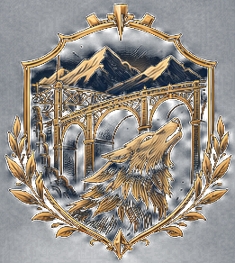
Infrastructure
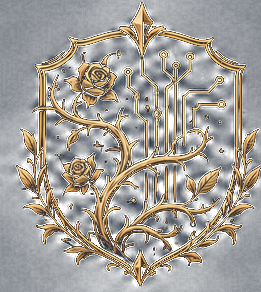
Technology
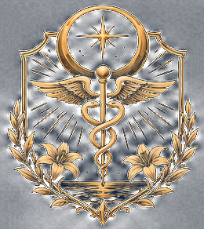
Healthcare
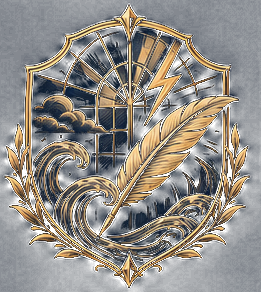
Media
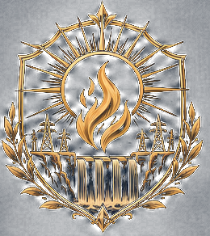
Energy
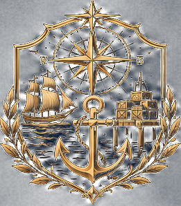
Trade & ports
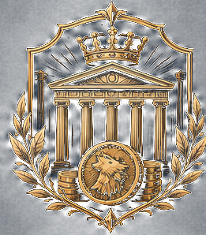
Banking
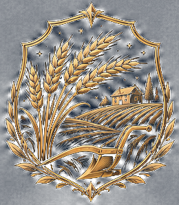
Agriculture
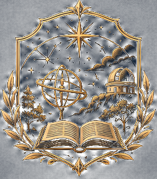
Research
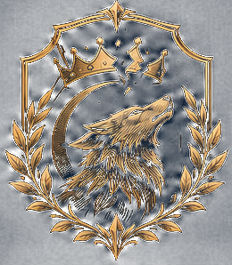
Independent elected pack
Create an adult fictional resident. Your identity belongs to you, not the Concord. No information is sent to a server.
The selected pack’s official heraldic emblem appears on your card, with or without a portrait. Preview updates as you type.
Choose the qualities your fictional resident values. The result is a playful creative prompt, not an assessment of real personality.
Cold iron · coffee · clean snow
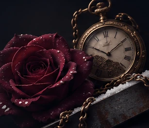
Night rain · cedar · hydrangea leaves

Bergamot · black tea · warm amber

Cedar smoke · leather · black tea

Two medical timestamps raise questions. Discrepancies are not proof of fraud.
Celeste’s claim remains unverified and belongs to an optional story branch.
Darius’s elected movement challenges hereditary authority.
These are fictional, spoiler-light editorial notes. No real-world submissions or live community tally are enabled.
The original Vows collection, now housed here in the Society. Select any artwork to view it in full.
The original private gallery, now part of the Veyrholm Society.
Adult artwork. Confirm you are at least 18 to view.